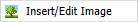

Inserting Images in Documentation Topics
You can use the  item on the HTML editor's right-click menu to insert an image, but you need to know the URL of the image. If you want to use any of the standard images that are shipped with (for example, screenshots or button images), you need to use an image token in the text.
To insert a standard image:
- In the text, type $I$imagename$I$. For example: $I$pic03.gif$I$.
- For a button, type $I$imagename|button$I$. For example: $I$add.svg|button$I$. (You can find the name of a button file by right-clicking on the button in and selecting Save Picture As... This will open a box with the File Name filled in; note the name and close the box.)
- For a screenshot, type $J$imagename$J$. This inserts the screenshot as a hidden image, with a link that displays the screenshot. By default, displays the screenshot using the cascading style sheet class "screen". You can override the class by entering $J$imagename|class$J$ (for example: $J$screen35.gif|small$J$).
- You can also use the lookup: select either Image or Button.
Inserting images - configuration
Standard documentation images are held in the /docimage/ directory.
Standard button images are held in the /images/ directory.